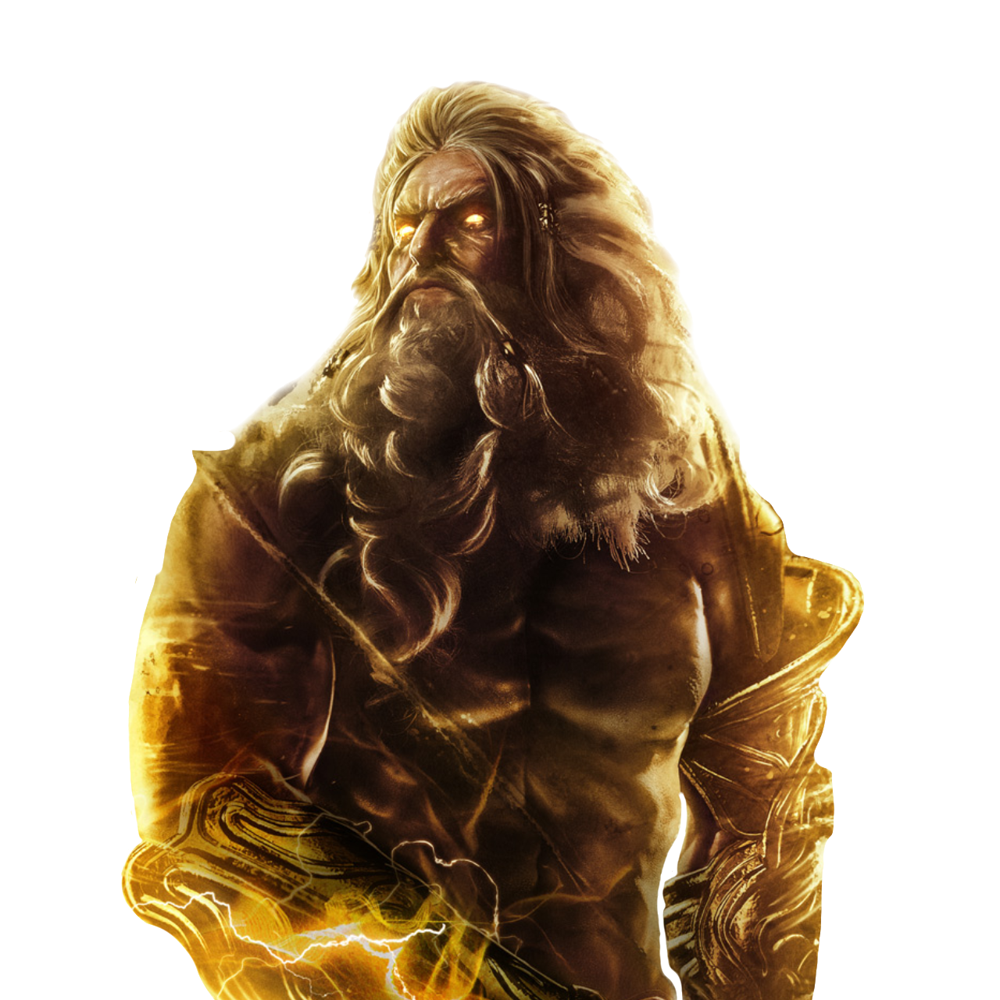
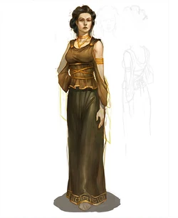
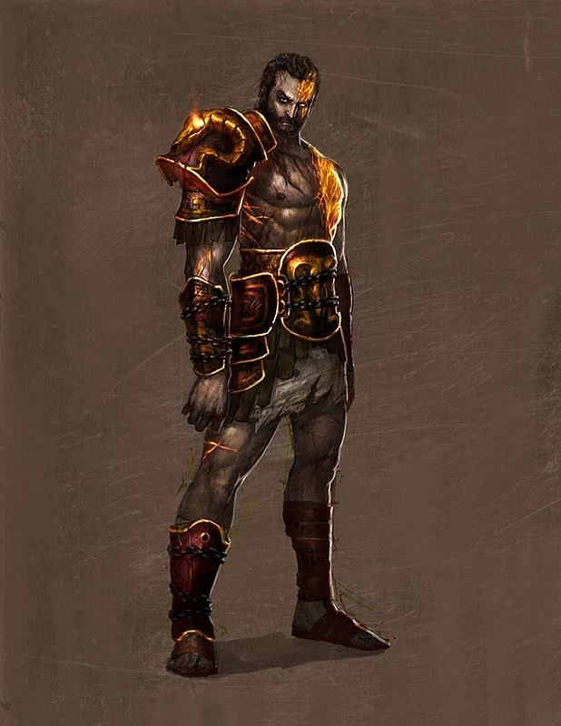
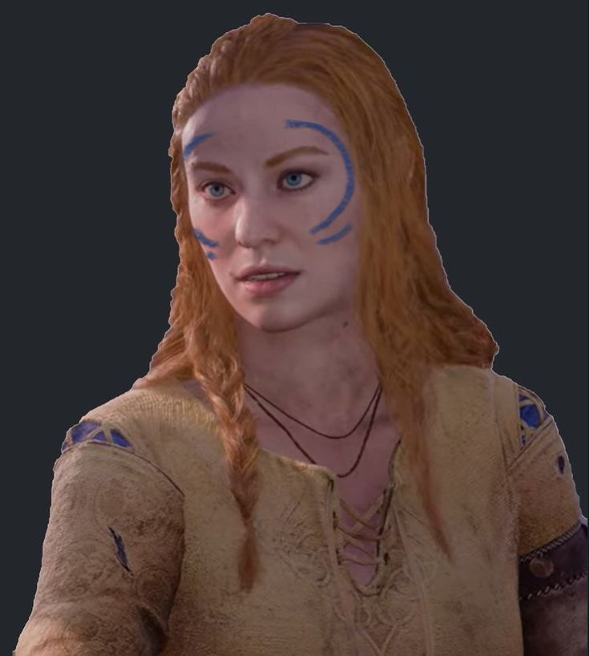

Zeus era el rey de los dioses, gobernante del Monte Olimpo y
Dios del cielo y los relámpagos. Sus símbolos eran el Rayo,
el Águila, el Toro, la Serpiente, y el Roble. Zeus era el hijo
de los Titanes Cronos y Rea, y el más joven pero más fuerte
de todos sus hermanos. Fue Zeus quien llevó a sus hermanos y
hermanas a la batalla contra los Titanes, reclamando el trono
de su padre y desterrando a los Titanes al Tártaro.

Zeus
Calisto (Madre)
Calisto es la madre espartana de Kratos y de Deimos, y una de
las muchas amantes del dios Zeus.

Calisto
Ultima conversacion entre Kratos y su madre
Deimos (Hermano)
Deimos es el hermano menor de Kratos. Fue secuestrado por
Ares durante su infancia para evitar que se cumpliera la
profecía sobre la destrucción del Olimpo. Durante años
permaneció cautivo en los Dominios de la Muerte, alimentado
por el odio hacia el hermano que nunca acudió a rescatarlo.

Deimos
Faye (Segunda Esposa)
Mucho antes de conocer a Kratos, era una tenaz guerrera nombrada
anteriormente como Laufey la Justa, oponiéndose en desacuerdo
con los crueles dioses Aesir, brindando ayuda a los que más
la necesitaban. Además de eso, fue una de los últimos gigantes
que quedaban en Midgard, gracias a que Thor y Odín se ocupaban
de liquidarlos por temor al Ragnarök. Para sobrevivir, escapó
con el resto de su especie al Jötunheim, con ayuda de Tyr, que
separó la ubicación del reino, conectada con el puente, solo
así los dioses no los podían encontrar.

Faye
Atreus (Hijo)
Atreus es un dios adolescente, hijo de Kratos y la Gigante Laufey.
Es conocido por los Gigantes y los dioses Aesir como "Loki".
Atreus era un niño enfermizo que ha vivido siempre con su madre. Ambos pasaban
largos períodos de tiempo sin ver a Kratos, pero tras el fallecimiento de Faye,
Atreus se ve obligado a convivir con Kratos y a ser entrenado por él. A diferencia
del espartano, su hijo conoce el lenguaje nórdico antiguo, por lo que le servirá de
ayuda en determinadas situaciones.
Atreus está equipado con un arco mágico, cuyo aprendizaje forma parte del entrenamiento
de su padre. También está equipado con una pequeña daga, perteneciente a su madre.